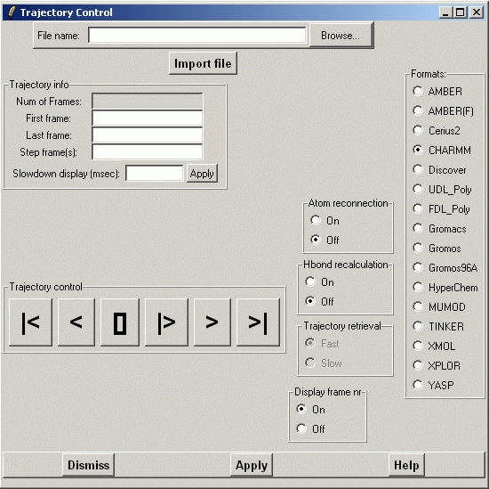
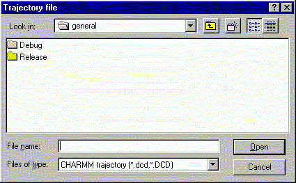

*****************************************************************
Trajectory Manager Widget
Leif Laaksonen CSC 2002
*****************************************************************
This is the main trajectory control widget. Before you can process a
trajectory file you have to import a coordinate file to define the
molecule topology and the atom labels because some trajectories contain
only atom coordinate information.
Steps to do:
- Click of the button for the trajectory type you will analyze or
look at. The buttons are on the right.
- Select a file from using file browser (Browse button).
- Press the "Import file" button to read the trajectory information.
- When the file has properly been processes you can reed the number
of frames in the file down on the page. There will also be display
information about from which frame the display will start and at which
frame it will stop and the frame step. Usually you don't have to touch
this information att all.
- To display the frames as loop starting from the first defined to the
last click at the button with a triangle. To stop the display press
the button with a square.
The supported trajectory formats are:
- AMBER
- Unformatted Amber trajectory file. In the utility directory there is
program for the conversion of a formatted trajector into a unformatted
one. More information can be found from the AMBER Web pages
http://www.amber.ucsf.edu/amber/formats.html.
- AMBER(F)
- Formatted Amber trajectory file. It is recommended that only
unformatted trajectories are used. In the utility directory there is
program for the conversion of a formatted trajector into a unformatted
one. More information can be found from the AMBER Web pages
http://www.amber.ucsf.edu/amber/formats.html.
- CERIUS2
- Unformatted binary CERIUS2 trajectory file.
- CHARMM/CHARMm
- Unformatted binary CHARMM/CHARMm trajectory file.
- DISCOVER
- Unformatted binary DISCOVER trajectory file.
- GROMOS
- Unformatted GROMOS trajectory file.
- GROMOS96
- Formatted ascii GROMOS96 trajectory file.
- HYPERCHEM
- Unformatted binary HyperChem trajectory file.
- MUMOD
- Unformatted binary MUMOD trajectory file. The MUMOD program is
developed by Dr. Olle Teleman.
- TINKER
- Formatted TINKER trajectory file.
- XMOL
- Formatted ascii XMOL (multiset) trajectory file.
- XPLOR
- Unformatted binary XPLOR trajectory file.
- YASP
- Unformatted binary YASP trajectory file. The YASP program is developed
by Dr. Florian Muller-Plathe (.
Trajectory display control:
- |<... go to first frame
- <... back one frame
- []... halt display loop
- |>... play forward one frame at the time in a loop
- >... forward one frame
- >|... go to last frame
By default the atom connection table is NOT recalculated in between the
different frames. However, sometimes it's preferable to recalculate
the connection table. This can be done by clicking the "Atom reconnection"
to "ON".
The same is true for atom hydrogen bond table except that then
"Hbond recalculation" is turned "ON" not all hydrogen bonds are recalculated.
Only following connections are recalculated:
- If you have calculated hydrogen bonds after loading a coordinate file
in Hydrogen bond widget or using
corresponding line command, then bonds between those atoms are
considered to be recalculated.
If you have calculated hydrogen bonds multiple times only
the last creations is counted.
- If you haven't calculated any hydrogen bond after loading a coordinate file
or you have removed them then all hydrogen bonds are considered to be
created and recalculated.
- In both cases the search subset
can be used to limit the set of atoms
those hydrogen bonds are really recalculated.
For the formatted trajectory files there are two methods available:
- Sequential reading of frames. Very robust but quite inefficient
and slow.
- Random access of the frames. Efficient but can cause problems,
specially if you don't know that there is a different between Unix
and Windows ascii files.
It's possible to display the frame number of the current frame. To display
the frame number click "Display frame number: on" or off
to turn it off.

File browser to select a trajectory file.

Line command: see trajectory command
**************************************************************************
LUL/2002
**************************************************************************